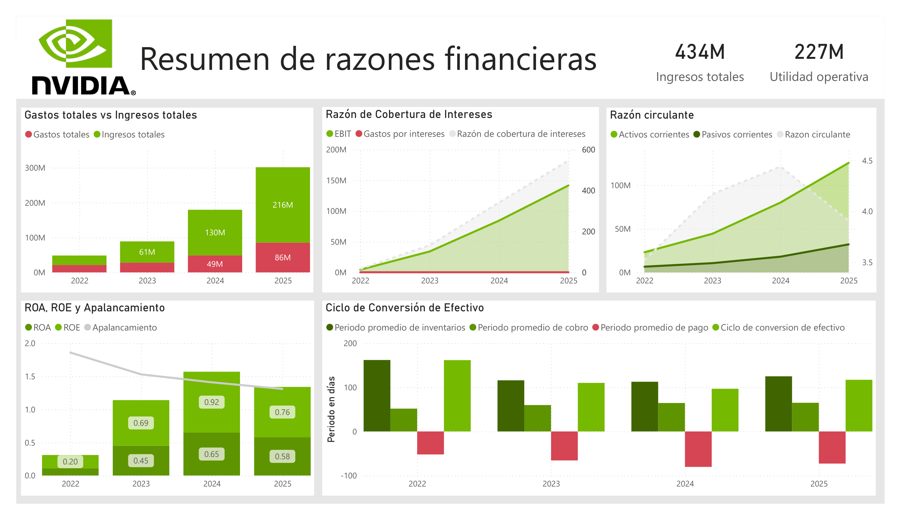

1. Context and Problem Definition
NVIDIA Corporation is a software and fabless technology company that develops graphics processing units, application programming interfaces for data science and high-performance computing, as well as system-on-a-chip solutions for mobile computing and the automotive market.
In this project, I will answer the following questions: How is the company performing in terms of liquidity and profitability? How is its cash conversion cycle? How is the company performing in terms of its interest coverage ratio? Finally, I will analyze their return on equity (ROE) using the DuPont Analysis.
2. Data and Its Preparation
The data was obtained from Yahoo Finance, a website that offers a vast amount of finance data.
Previously, the site had an option that allowed users to download financial information for any company into an Excel file. However, that feature was removed, and when copying the data into an Excel spreadsheet, it pasted into a single column.
For this reason, I had to write a small Python script that would allow me to display the data as a table.
3. Calculation of Financial Ratios
For this phase of the project, I had an Excel workbook containing the income statement and balance sheet, and on a third sheet I created a table with the calculations for various financial ratios.
4. Dashboard Design in Power BI
In Power BI, I began by designing the dashboard, customizing the color palette to match NVIDIA's and adding the company logo to make it more presentable.
As for the charts, I chose those that best summarized the company's information, taking into account the income statement, the balance sheet, and its financial ratios.
As for calculating new metrics, I only needed to calculate the negative value of the Average Payment Period so that it would appear as a negative value on the chart relative to the other values in the Cash Conversion Cycle.

5. Conclusions
In terms of liquidity, NVIDIA has sufficient funds to meet its short-term financial obligations. The company's current ratio has remained above 3 throughout the 2023-2026 analysis period. This is due to a significant increase in its current assets from 23.1MM to 125.6MM, compared with a smaller increase in its current liabilities from 6.6MM to 32.2MM.
The average collection and payment periods have gradually increased, but this is not reflected in the cash conversion cycle, which decreased from 162 to 117 days, indicating improvements in operational efficiency.
The interest coverage ratio increased dramatically from 16.96 to 547.14, as a result of a significant increase in profits from 4.4MM to 144.7MM during the period in question, which translates to an extremely high capacity to pay interest at present.
The net profit margin has increased from 0.16 to 0.56 during the 2023-2026 analysis period, as a result of a significant increase in revenue—from 26.9MM to 215.9MM—compared with a smaller increase in expenses—from 21.3MM to 85.5MM—which may stem from large but well-managed investments. Consequently, we can conclude that the company has become extremely profitable and scalable.
Return on equity (ROE) increased from 0.20 to 0.76 as a result of an improvement in the net profit margin, which rose from 0.16 to 0.56, and an increase in asset turnover from 0.65 to 1.04 during the 2023-2026 period. The company's increase in ROE stems from its operational improvements, as its leverage ratio decreased from 1.86 to 1.31.